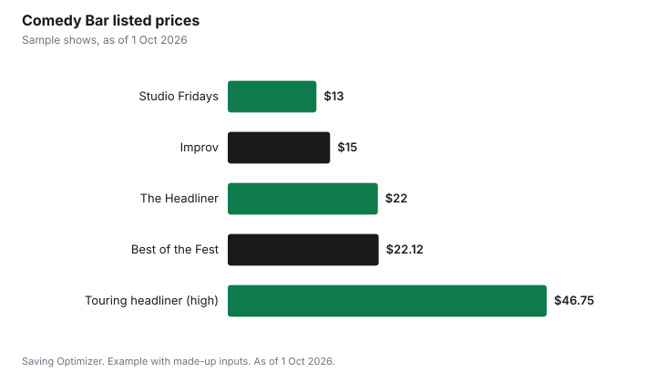

Entertainment · Canada
Cheap Comedy Show Tickets in Canada: Clubs, Improv Nights and Amateur Nights

The cheapest way to see live comedy in Canada is a weeknight or showcase at a local club, where tickets often cost less than a movie and a snack. Toronto's Comedy Bar, for example, lists shows from $13 to about $25, improv nights from $15 and a karaoke night from $0, while touring headliners on the same stages start at roughly $30 to $47. Yuk Yuk's Toronto runs a weekly amateur night on Tuesdays, which is the classic low-cost option. Check whether the price shown includes fees and tax, and read the club's food and drink policy before you go, since what you order can cost more than the ticket.
Key takeaways
- Club showcases and weeknights are the cheapest comedy.
- Comedy Bar listed shows from $13, improv from $15 and headliners from about $30.75 to $46.75.
- Yuk Yuk's Toronto runs a Legendary Amateur Night on Tuesdays.
- Ontario requires the total price with fees itemized from primary sellers.
- Check food and drink policies; they can double the night's cost.
- Example with made-up inputs: a $44 night for two versus $149.
Clubs versus theatres
Comedy comes in two price tiers. Clubs run several shows a week with a rotating lineup of local and visiting comedians, and tickets are usually modest. Theatre and arena shows feature a single famous headliner, with ticket prices set by the promoter and often much higher, plus service fees. The same club can host both: Comedy Bar, with two stages in Toronto seven nights a week, lists everything from house showcases to touring headliners.
| Type of show | Example listing | Listed price |
|---|---|---|
| Studio night | Studio Fridays | From $13.00 |
| Improv | Watch Party Improv | From $15.00 |
| House showcase | The Headliner | From $22.00 |
| Festival-style showcase | Best of the Fest | From $22.12 |
| Touring headliner | Various | From $30.75 to $46.75 |
| Karaoke | Comedy Bar Karaoke | From $0.00 |
Amateur and weeknight shows
Amateur nights put new comedians on stage, and the lineups are unpredictable by design. Yuk Yuk's Toronto lists its Legendary Amateur Night on Tuesdays, alongside a Wednesday show called Hump Day and weekend headliner shows. Weeknight shows can be cheaper and less crowded than Friday and Saturday shows; compare the club's calendar. Improv shows, where performers make up scenes on the spot, are another low-cost format; Comedy Bar lists several improv nights at around $15.
What a night of comedy really costs
The ticket is only part of it. Add service fees, tax, food and drinks, a tip for table service, and getting there and home late at night. A $15 improv ticket can turn into a $45 night once you add two drinks, a snack and a ride, while a $40 headliner ticket can become $90. Writing down the full night's cost before you book, rather than the ticket alone, makes it easier to compare a club show with other outings. It also shows where cuts are painless: eating at home first, choosing a show you can reach by transit, and skipping the second drink rarely make a show less funny.
Fees, taxes and drinks
Ontario's Ticket Sales Act requires primary ticket sellers to show the total price in Canadian dollars with fees itemized, so look for the all-in total at checkout rather than the headline price. The Act does not apply to events at schools, municipally or community-owned buildings and places of worship, so community shows may show prices differently. Some clubs may have food or drink minimums or table service; policies vary by club, so check the club's site or ticket page before you go. Ordering one drink and eating before the show keeps the night cheap.
Free and nearly free comedy
- Open mics and karaoke-style nights, sometimes free or a few dollars.
- Drop-in improv sessions, where you can join or watch.
- Comedy festival free events, when festivals offer them; check festival schedules.
- Student and community shows at colleges and community centres.
- Recorded specials on streaming services you already pay for.
Resale and big-name tours
For a famous touring comic, buy from the official seller listed on the venue's site. In Ontario, resale is capped at the original total price plus applicable taxes and the platform's standard fees, and resale buyers must get written validation or a money-back guarantee. If a show sells out, wait for added dates before paying a premium. Card presales may help you get in early, but they do not lower prices.
How to find cheap shows near you
Most clubs post a weekly calendar with prices, and many list showcases, improv and amateur nights separately from headliners. Follow two or three local clubs and check their calendars at the start of each week. Independent producers also run shows in bars, cafés and theatres; these are often promoted on social media and community event listings. Library event calendars and community centres sometimes host free or low-cost comedy, especially during festivals. If you live outside a big city, a touring comic's stop at a local theatre can be cheaper than travelling to a major venue once you count gas, parking and a late meal.
When a festival comes to town, compare single-show tickets with passes. A pass can be good value if you plan to see several shows, but single tickets are cheaper if you only want one or two. Free outdoor or street programming, where it is offered, is the budget option. Read each festival's own page for current prices and refund rules, since festival terms differ.
Classes if you want to try it
If you would rather perform, clubs also run classes. Comedy Bar lists stand-up, improv, sketch and storytelling courses, mostly from $275 to $325, plus drop-in sessions and classes for teens and people 60 and older. A drop-in class is a cheap way to test your interest before paying for a full course.
Example with made-up inputs
These numbers are an example with made-up inputs. Two friends compare a Saturday headliner with a weeknight studio show. The Saturday plan: two $45 tickets plus $8 of fees, two drinks each at $9, and $15 parking, for $149 before tip. The weeknight plan: two $13 studio tickets plus $3 of fees, one pop each at a made-up $4, and two TTC fares at $3.30 for the friend who does not walk, for about $44. Both nights are funny; one costs less than a third of the other.
| Item | Saturday headliner | Weeknight studio show |
|---|---|---|
| Tickets and fees | $98 | $29 |
| Drinks | $36 | $8 |
| Getting there | $15 parking | $6.60 transit |
| Total | $149 | About $44 |

Steps
- Browse your local club's weekly calendar.
- Pick weeknight, improv or amateur shows for the lowest prices.
- Check the all-in price at checkout.
- Read the club's food and drink policy.
- Eat before and use transit.
- For big tours, buy only from the official seller.
Common mistakes
- Comparing ticket prices before fees.
- Spending more on drinks than tickets.
- Paying resale premiums before added dates are announced.
- Assuming every club has the same minimum-order policy.
Related: ticket fees and all-in pricing and date night ideas.
Sources
- Comedy Bar, show and class listings, comedybar.ca, as of 1 Oct 2026.
- Yuk Yuk's, Toronto show listings, yukyuks.com, as of 1 Oct 2026.
- Government of Ontario, Buying tickets to events in Ontario, ontario.ca, as of 1 Oct 2026.
- Toronto Transit Commission, Fares, ttc.ca, as of 1 Oct 2026.
- Ticket, drink and parking prices in the example are made-up inputs.
Frequently asked questions
How much are comedy club tickets in Canada?
It varies. Toronto's Comedy Bar listed shows from $13 to about $25 and touring headliners from about $30.75 to $46.75 as of 1 October 2026.
What is the cheapest night for comedy?
Weeknights, amateur nights and improv shows. Yuk Yuk's Toronto runs its Legendary Amateur Night on Tuesdays.
Do comedy clubs have a drink minimum?
Policies vary by club, so check the club's site or ticket page before you go.
Do ticket prices include fees in Ontario?
Primary sellers must show the total price in Canadian dollars with fees itemized under Ontario's Ticket Sales Act.
Is resale allowed above face value in Ontario?
No. Resale is capped at the original total price plus applicable taxes and the platform's standard fees.
How can I try stand-up comedy cheaply?
Look for drop-in sessions before paying for a course; Comedy Bar lists drop-ins and courses from about $275.
Researched and drafted with AI assistance and fact-checked against official Canadian sources. How we create content.
Disclosure: Saving Optimizer may earn a commission if a partner link is added later, such as a ticketing offer type. No partnership is claimed on this page. Education only.